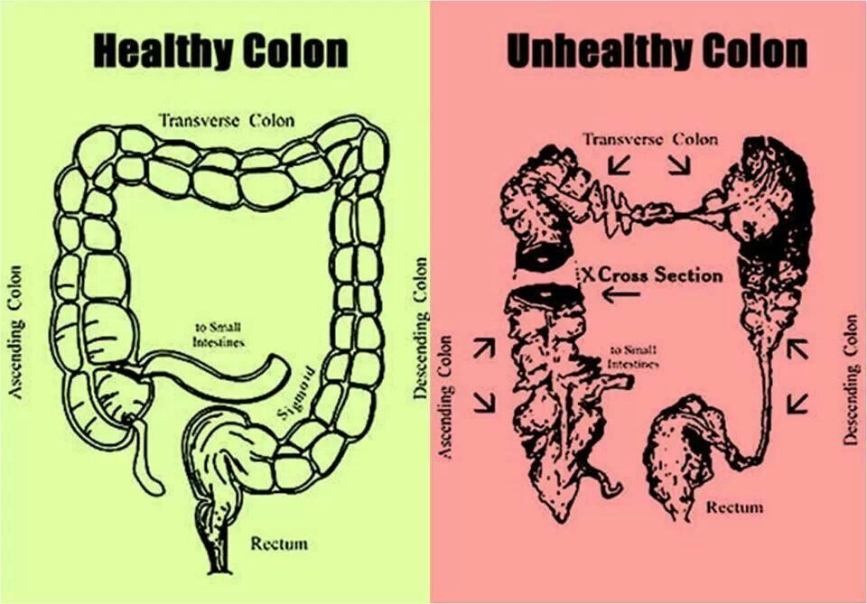
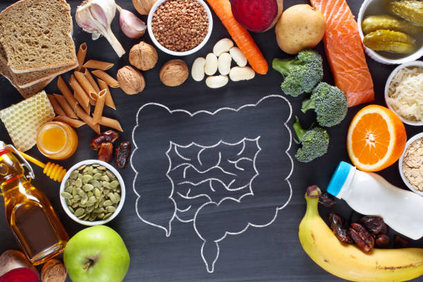

Intestine Health Information
Precautions for Intestine Health
Maintaining intestine health is crucial for overall well-being. Here are some precautions:
- Eat a balanced diet rich in fiber, fruits, vegetables, and whole grains to support digestive health.
- Stay hydrated by drinking plenty of water throughout the day.
- Avoid excessive consumption of processed foods, fatty foods, and sugary snacks.
- Practice good hygiene, including regular handwashing, to reduce the risk of infections.
- Limit intake of alcohol and quit smoking, as these can damage the intestines.
- Exercise regularly to promote healthy digestion and maintain a healthy weight.
- Manage stress through relaxation techniques like meditation, yoga, or deep breathing exercises.
- Discuss any concerns or changes in intestine health with a healthcare provider.
Cures for Intestine Health
Treatment options for intestine-related issues depend on the specific condition. Here are some common approaches:
- Medications: Depending on the underlying cause, medications may be prescribed to manage symptoms, control inflammation, or treat infections.
- Dietary modifications: Adopting a low-FODMAP diet, avoiding trigger foods, and incorporating probiotics may help manage conditions like irritable bowel syndrome (IBS) or inflammatory bowel disease (IBD).
- Surgery: Surgical procedures such as colectomy, bowel resection, or ileostomy may be necessary for certain intestinal conditions, such as colorectal cancer or severe ulcerative colitis.
- Biologic therapies: For individuals with severe Crohn's disease or ulcerative colitis, biologic medications may be prescribed to target specific molecules involved in inflammation.
- Lifestyle modifications: Stress management, regular exercise, and adequate sleep can help improve intestine health and reduce symptoms of digestive disorders.

